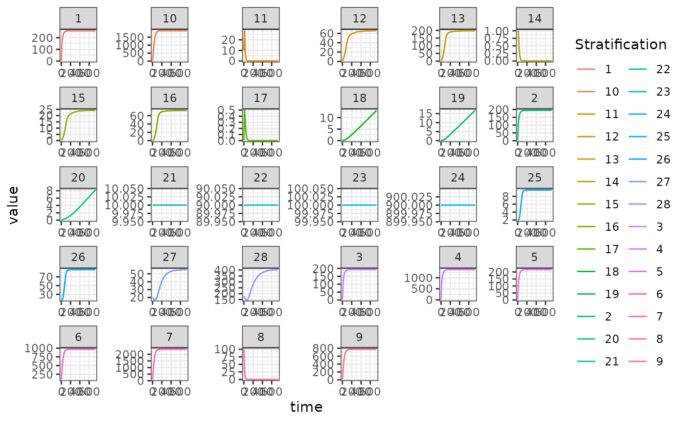
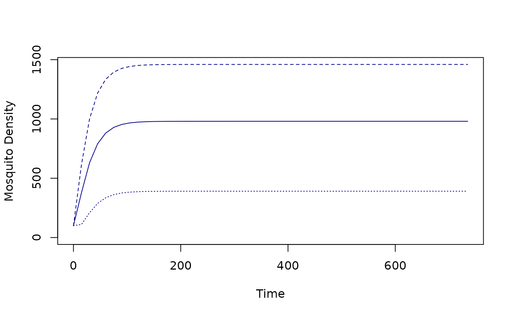

Introduction
This vignette illustrates how to setup, solve, and analyze models of mosquito-borne pathogen transmission dynamics and control using modular software. It serves several purposes:
- Modular notation is illustrated by constructing a model with five
aquatic habitats (\(n_q=5\)), three
patches (\(n_p=3\)), and four human
population strata (\(n_h=4\)). We call
it
5-3-4.
Diagram
The model 5-3-4 is designed to illustrate some important
features of the framework and notation. We assume that:
the first three habitats are found in patch 1; the last two are in patch 2; patch 3 has no habitats.
patch 1 has no residents; patches 2 and 3 are occupied, each with two different population strata;
Transmission among patches is modeled using the concept of time spent, which is similar to the visitation rates that have been used in other models. While the strata have a residency (i.e; a patch they spend most of their time in), each stratum allocates their time across all the habitats.

Encoding Structural Information
Basic location information can be encoded in vectors. One vector,
called the habitat membership vector or membership, holds
information about the location of habitats. Another vector, called
the strata residency vector or residence, encodes the
information about where people live.
For the aquatic habitats, the habitat membership vector is an ordered list of the index of patches where the habitats are found:
membership = c(1,1,1,2,2)
membership
#> [1] 1 1 1 2 2The number of habitats, \(n_q\) or
nHabitats, is the length of the membership matrix:
nHabitats = length(membership)
nHabitats
#> [1] 5For the human population strata, the residence vector is an ordered list of the index of patches where people live:
residence = c(2,2,3,3)
residence
#> [1] 2 2 3 3The number of strata, \(n_h\) or
nStrata, is the length of the residence matrix:
nStrata = length(residence)
nStrata
#> [1] 4The number of patches, \(n_p\) or
nPatches, is just a number:
nPatches = 3Aquatic Habitat Membership Matrix
For computation, ramp.xds uses an \(n_p \times n_q\) matrix called \(\cal{N}.\) It is specified by the habitat
vector. In the matrix, \({N}_{i,j}\) is
\(1\) if the \(i^{th}\) patch contains the \(j^{th}\) habitat:
\[\begin{equation} {N} = \left[ \begin{array}{ccccc} 1 & 1 & 1 & 0 & 0 \\ 0 & 0 & 0 & 1 & 1\\ 0 & 0 & 0 & 0 & 0\\ \end{array} \right] \end{equation}\]
The matrix is created by a function
make_habitat_matrix:
habitat_matrix = make_habitat_matrix(nPatches, membership)
habitat_matrix
#> [,1] [,2] [,3] [,4] [,5]
#> [1,] 1 1 1 0 0
#> [2,] 0 0 0 1 1
#> [3,] 0 0 0 0 0The habitat matrix is used to sum quantities in habitats up to patches. For example, the number of habitats per patch is \({N} \cdot 1\), where \(1\) is a vector of 1’s:
The Residence Matrix
For computation, ramp.xds also creates a \(n_p \times n_h\) matrix called \(\cal J.\) It is specified by residence
vector. The element \({\cal J}_{i,j}\)
is \(1\) if the \(j^{th}\) stratum resides in the \(i^{th}\) patch:
\[\begin{equation} {J} = \left[ \begin{array}{cccc} 0 & 0 & 0 & 0 \\ 1 & 1 & 0 & 0 \\ 0 & 0 & 1 & 1 \\ \end{array} \right] \end{equation}\]
The matrix is created by a function
make_residency_matrix:
residence_matrix = make_residency_matrix(nPatches, residence)
residence_matrix
#> [,1] [,2] [,3] [,4]
#> [1,] 0 0 0 0
#> [2,] 1 1 0 0
#> [3,] 0 0 1 1The number of strata per patch is:
Egg Laying
It is plausible that these habitats are not all found with the same propensity. Habitats are found after a search, and that search begins after mosquitoes have blood fed. To compute egg distribution, we create a vector describing habitat search weights, denoted \(\omega.\) The proportion of eggs laid in each patch is it’s search weight as a proportion of summed search weights of all habitats in a patch, a quantity that we have called availability, \(Q\).
For now, we generate arbitary weights for each one of the habitats:
searchWtsQ = c(7,2,1,8,2)
searchWtsQ
#> [1] 7 2 1 8 2And we can compute availability as \(N
\cdot w\). In ramp.xds, the function that computes
habitat availability is called F_Q:
Q <- F_Q(habitat_matrix, searchWtsQ)
Q
#> [1] 10 10 0Eggs are distributed among habitats in proportion to the relative values of the habitat search weights. These habitat search weights and availability can be used to compute the values of some adult mosquito bionomic parameters using functional responses, that make use of their absolute values. The absolute values only have a meaning through their effects.
The egg dispersal matrix \(U\) is a \(n_q \times n_p\) matrix describing how eggs laid by adult mosquitoes in a patch are allocated among the aquatic habitats in that patch. It is a matrix of search weights normalized by availability:
\[\begin{equation} U = \left[ \begin{array}{ccccc} .7 & 0 & 0\\ .2 & 0 & 0\\ .1 & 0 & 0\\ 0 & .8 & 0\\ 0 & .2 & 0\\ \end{array} \right] \end{equation}\]
It is computed using the function make_O_matrix that
takes care of a problem that could arise from having empty patches, like
patch 3 in this model.
O_matrix = make_O_matrix(searchWtsQ, habitat_matrix, Q)
O_matrix
#> [,1] [,2] [,3]
#> [1,] 0.7 0.0 0
#> [2,] 0.2 0.0 0
#> [3,] 0.1 0.0 0
#> [4,] 0.0 0.8 0
#> [5,] 0.0 0.2 0Blood Feeding
Blood feeding is an activity that involves mosquitoes and humans:
mosquitoes are searching for vertebrate hosts to feed on, and they find
and feed on humans and other vertebrate hosts. The blood feeding
constructs in ramp.xds translate this into a set of
algorithms. The host population can be subdivided into a set of strata,
and those humans spend time in the patches around home. Both humans and
mosquitoes have daily activity patterns, so that human time spent and
relative mosquito activity rates can change during the day. Time spent
is thus translated into time at risk. Like the
habitats, the availability of those hosts to blood feeding mosquitoes is
affected by a set of search weights.
This model has four population strata with even search weights:
searchWtsH = c(1,1,1,1)This size of each population stratum differs:
HPop <- c(10,90, 100, 900)The time spent matrix, \(\Theta\) is a \(n_p \times n_h\) matrix. Each column describes how a human stratum allocates time among patches.
\[\begin{equation} \Theta = \left[ \begin{array}{cccc} 0.01 & .01 & .001 & .001 \\ 0.95 & .92 & .04 & .02 \\ 0.04 & .02 & .959 & .929 \\ \end{array} \right] \end{equation}\]
This model does not consider daily patterns in human or mosquito activity, so time spent and time at risk are identical.
The availability of hosts is of time at risk and the population density weighed by their search weights:
W <- F_W_available(searchWtsH, HPop, TaR)
W
#> [1] 2.0 114.3 934.2Transmission
A mixing matrix, \(\beta\), describes the expected proportion of each infective bite that would be received be each population stratum.
F_beta(HPop, W, searchWtsH, TaR)
#> [,1] [,2] [,3]
#> [1,] 5e-03 0.0083114611 4.281738e-05
#> [2,] 5e-03 0.0080489939 2.140869e-05
#> [3,] 5e-04 0.0003499563 1.026547e-03
#> [4,] 5e-04 0.0001749781 9.944337e-04Aquatic Mosquito Dynamics
For this simulation, we use the basic competition model of larval
dynamics called basicL (see more here). It requires specification of three
parameters, \(\psi\) (maturation
rates), \(\phi\) (density-independent
mortality rates), and \(\theta\)
(density-dependent mortality terms), and initial conditions. The
function ramp.xds::xde_setup_L_obj_basicL does basic
checking of the input parameters and returns a list with the correct
class for method dispatch. The returned list is attached to the main
parameter list with name L_obj.
psi <- rep(1/8, nHabitats)
phi <- rep(1/8, nHabitats)
theta <- c(1/10, 1/20, 1/40, 1/100, 1/10)
L_obj = make_L_obj_basicL(nHabitats, psi=psi, phi=phi, theta = theta)Adult Mosquito Dynamics
It also uses the Ross-Macdonald model (see more here). Part of the specification of parameters
includes the construction of the mosquito dispersal matrix \(\mathcal{K}\), and the mosquito demography
matrix \(\Omega\). Like for the aquatic
parameters, we use ramp.xds::make_parameters_MYZ_RM_ode to
check parameter types and return a list with the correct class for
method dispatch.
The parameter values are:
g <- 1/12
sigma <- 1/12/2
mu <- 0
f <- 1/3
q <- 0.9
nu <- c(1/3,1/3,0)
eip <- 12
eggsPerBatch <- 30 We create a named list:
MYZo = list(g=g, sigma=sigma, mu=mu, f=f, q=q, nu=nu, eip=eip, eggsPerBatch=eggsPerBatch)Mosquito dispersal among the patches is described by a matrix, \(K.\) Each column in \(K\) describes the proportion of emigrating mosquitoes that go to every other patch. The diagonal elements are all \(0\):
We construct the demographic matrix \(\Omega\) given by the formula \[\Omega = \mbox{diag}\left(g\right) -
\left[\mbox{diag}\left(1-\mu\right) - {K} \right] \cdot
\mbox{diag}\left(\sigma\right)\] It is computed by
compute_Omega_xde:
Omega <- make_Omega_xde(g, sigma, mu, Kmatrix)Survival and dispersal through the EIP in this model, denoted \(\Upsilon,\) is computed using matrix exponentiation:
Upsilon <- expm::expm(-Omega*eip)The function xde_setup_MY_obj_RM can be used to
construct the adult mosquito model object, called
MY_obj.
MY_obj = make_MY_obj_macdonald(nPatches, MYZo)
class(MY_obj) <- "macdonald"The parameters are assigned to a list called baseline so
that it can be stored and used to compute the values of bionomic
parameters that have been modified by control.
names(MY_obj)
#> [1] "nPatches" "eip" "f" "q" "g"
#> [6] "sigma" "mu" "nu" "eggsPerBatch" "K_matrix"
#> [11] "Omega" "Upsilon" "baseline"Human Infection Dynamics
We use a static demographic model, which assumes a constant population size (constant \(H\)).
The 5-3-4 model uses the basic SIS (Susceptible-Infected-Susceptible)
model for the human component (see more here). It can be configured using
ramp.xds::xde_setup_XH_obj_SIS.
r <- 1/200
b <- 0.55
c <- c(0.1, .02, .1, .02)The model is configured and assigned the name
XH_obj:
XH_obj <- make_XH_obj_SIS(nStrata, list(), b, r, c)Initial Conditions
To solve the model, each variable needs an initial value. For the aquatic model:
For the adult mosquito model:
MYZinits = list(
M = rep(100, nPatches),
P = rep(10, nPatches),
Y = rep(1, nPatches),
Z = rep(0, nPatches)
)For the human model:
The xds Template
To build a model, ramp.xds must create an template that
stores the information about the patches, habitats, and strata in a
rigid form. The functions that solve and analyze the systems of
differential equations are, like most computer programs, unforgiving. An
object describing a model that can be solved by ramp.xds is
called an xds object. ramp.xds supports nimble
model building for extensible
dynamical systems, including
extensible systems of differential
equations (xde), and
discrete-time systems
using difference equations (dts).
Since the software is designed to solve very complex systems, we will
need to create an object that could accommodate added realism
(e.g. vector control). The function
make_xds_object_template sets up a compound list in
R that is like a building that we anticipate modifying,
with ports and junctions ready. These capabilities
that are not needed by simple models. The software’s requires that some
objects are present to handle all that complexity. Since most users
won’t want to learn about the details, the software includes a function,
called make_xds_object_template that sets up the
scaffolding for a model, including many that are set to their
null values (turned off).
A user only needs to know how to encode the information and what
information to encode. The rest is handled by functions. It is helpful
for users to understand some of the notation and terms. The following
are set up in order by make_xds_object_template:
-
the first required argument sets the value and class of
xdsxdeis for extensible systems of differential equationsdtsis for not a discrete-time systems
-
the second required arugment sets the value and class of
framethat dispatches both a setup function and a class ofxde_derivatives(forxdemodels) or a class ofdts_update(fordtsmodels)fulltells us the model should configure and compute all three dynamical componentsOther options –
mosy,aquatic,human, andcohort– work on subsets of the components, and while they could be configured usingfull
-
the third required term sets the value of
dlaythat dispatchesxds_solveodeusesdeSolve::odefor ordinary differential equations,ddeusesdeSolve:ddefor delay differential equations
the next three arguments are
nPatchesandmembershipandresidence, as explained above.
xds_obj = make_xds_object_template("dde", "full", nPatches, membership, residence) After being set up:
c(xds_obj$nHabitats, xds_obj$nPatches, xds_obj$nStrata)
#> [1] 5 3 4This was created by make_xds_object_template and stored
as xds_obj$habitat_matrix
xds_obj$habitat_matrix
#> NULLIf we want to retrieve the membership matrix, we can call
view_habitat_matrix
view_habitat_matrix(xds_obj)
#> $habitat_index
#> [1] 1 2 3 4 5
#>
#> $patch_membership
#> [1] 1 1 1 2 2The function make_xds_object_template was designed to
create a scaffolding. So Q and Umatrix get
created with default values: Iall patches are assumed to have the same
biting weights.
xds_obj$vars$Q
#> NULLA little detail to note is that an xds object is
designed to handle multiple vector and multiple host species. The
function make_xds_object_template only sets up the first
species. Similarly, we can view the egg distribution matrix for the
first species:
xds_obj$Umatrix[[1]]
#> NULLWhile this is a reasonable way to start, we don’t want to get stuck using the default values.
To make a modular system that works as expected, we need to adopt
some conventions for setting the values of parameters. This can create
challenges because after changing the search weights, we will
also need to update habitat availability and the egg
distribution matrix. Updating all of that by hand would be
cumbersome, so ramp.xds has adopted some conventions for
changing parameter values and then updating the objects that depend on
them.
Building the Object
xds_obj$L_obj = list()
xds_obj$L_obj[[1]] = L_obj
xds_obj$MY_obj = list()
xds_obj$MY_obj[[1]] = MY_obj
xds_obj$XH_obj = list()
xds_obj$XH_obj[[1]] = XH_obj
xds_obj <- setup_L_inits(xds_obj, 1, Linits)
xds_obj <- setup_MY_inits(xds_obj, 1, MYZinits)
xds_obj <- setup_XH_inits(xds_obj, HPop, 1, Xinits)After the parameters for 5-3-4 have been specified, we
can generate the indices for the model and attach them to the parameter
list.
xds_obj = make_indices(xds_obj)Setting Parameter Values
To assign new values for the habitat search weights, we use a
function called set_habitat_wts_static. After setting the
values of the habitat search weights, we need to update habitat
availability and the egg distribution matrix. The functions
makeQ and make_Umatrix do this.
xds_obj <- change_habitat_weights(searchWtsQ, xds_obj)We can check to see
xds_obj$ML_interface$Q[[1]]
#> [1] 3 2 0
xds_obj$ML_interface$O_matrix
#> NULL
xds_obj <- change_TimeSpent_matrix(TaR, xds_obj)
xds_obj$XY_interface$TimeSpent
#> [[1]]
#> [,1] [,2] [,3] [,4]
#> [1,] 0.01 0.01 0.001 0.001
#> [2,] 0.95 0.92 0.040 0.020
#> [3,] 0.04 0.02 0.959 0.929
xds_obj <- compute_TaR(xds_obj,0)
xds_obj$XY_interface$TaR
#> [[1]]
#> [[1]][[1]]
#> [,1] [,2] [,3] [,4]
#> [1,] 0.01 0.01 0.001 0.001
#> [2,] 0.95 0.92 0.040 0.020
#> [3,] 0.04 0.02 0.959 0.929
xds_obj <- change_blood_search_weights(searchWtsH, xds_obj)
y0 <- get_inits(xds_obj)
xds_obj <- compute_WB(0, y0, xds_obj)
xds_obj$XY_interface$W[[1]]
#> [1] 2.0 114.3 934.2
xds_obj <- change_K_matrix(Kmatrix, xds_obj)
xds_obj$MY_obj[[1]]$K_matrix
#> [,1] [,2] [,3]
#> [1,] 0.0 0.6 0.3
#> [2,] 0.4 0.0 0.7
#> [3,] 0.6 0.4 0.0
get_Omega(xds_obj, 1)
#> [,1] [,2] [,3]
#> [1,] 0.08333333 0.00000000 0.00000000
#> [2,] 0.00000000 0.08333333 0.00000000
#> [3,] 0.00000000 0.00000000 0.08333333
get_Upsilon(xds_obj, 1)
#> [,1] [,2] [,3]
#> [1,] 0.3678794 0.0000000 0.0000000
#> [2,] 0.0000000 0.3678794 0.0000000
#> [3,] 0.0000000 0.0000000 0.3678794Functions like set_habitat_wts_static are designed to
modify parameters to guarantee that all the internal objects that rely
on those parameters get updated. If we use
set_habitat_wts_static the updating gets done
automatically.
The software was designed to handled more complex situations than the
one we’ve illustrated here. In some models, we might want to make the
habitat search weights change dynamically. For example, we might want to
simulate habitat dynamics with some ephemeral habitats that dry up and
can’t be found. That would be called a non-autonomous system,
and we would need to recompute the \(Q\) and \(U\) each time step. The egg laying object
is assigned a class dynamic for dispatching by R’s S3
object system. If none of the values affecting egg laying are time
dependent – we would call the resulting system autonomous –
then we assign the objects a class static so they don’t get
updated. To guarantee that we are recomputing things correctly, whenever
the software updates the values of static parameters, it assigns the
class setup. Whenever EggLaying.setup gets
called, it runs EggLaying.dynamic once and then changes the
class to static.
Numerical Solution
Now we can pass the vector of initial conditions, y, our
parameter list xds_obj, and the function
ramp.xds::xde_derivatives to the differential equation
solvers in deSolve::ode to generate a numerical trajectory.
The classes of XH_obj, MY_obj, and
L_obj in xds_obj will ensure that the right
methods are invoked (dispatched) to solve your model.
We need to get the stored initial values, but by default these are returned as a named list, to make it easy to examine.
We want to pass an unnamed vector to the solver so:
y0 = get_inits(xds_obj, flatten=TRUE)Plot Output
With a small amount of data wrangling made easier by the
data.table package, we can plot the output.
colnames(out)[xds_obj$ix$L[[1]]$L_ix+1] <- paste0('L_', 1:xds_obj$nHabitats)
colnames(out)[xds_obj$ix$MYZ[[1]]$M_ix+1] <- paste0('M_', 1:xds_obj$nPatches)
colnames(out)[xds_obj$ix$MYZ[[1]]$P_ix+1] <- paste0('P_', 1:xds_obj$nPatches)
colnames(out)[xds_obj$ix$MYZ[[1]]$Y_ix+1] <- paste0('Y_', 1:xds_obj$nPatches)
colnames(out)[xds_obj$ix$MYZ[[1]]$Z_ix+1] <- paste0('Z_', 1:xds_obj$nPatches)
colnames(out)[xds_obj$ix$X[[1]]$X_ix+1] <- paste0('X_', 1:xds_obj$nStrata)
out <- as.data.table(out)
out <- melt(out, id.vars = 'time')
out[, c("Component", "Stratification") := tstrsplit(variable, '_', fixed = TRUE)]
out[, variable := NULL]
ggplot(data = out, mapping = aes(x = time, y = value, color = Stratification)) +
geom_line() +
facet_wrap(. ~ Component, scales = 'free') +
theme_bw()
Using xde_setup
We create lists with all our parameters values:
MYZo = list(
g = 1/12, sigma = 1/12/2,
f = 1/3, q=0.9, nu=c(1/3,1/3,0),
eggsPerBatch = 30,
eip = 12,
M = 100, P = 10, Y = 1, Z = 0
)
xds_setup(MYname="macdonald", Xname="SIS", Lname="basicL",
nPatches = 3, HPop=c(10, 90, 100, 900),
membership=c(1,1,1,2,2),
MYoptions=MYZo, K_matrix=Kmatrix, XHoptions=Xo, Loptions = Lo,
residence=c(2,2,3,3), searchB=searchWtsH,
TimeSpent=TaR, searchQ = c(7,2,1,8,2)) -> mod534We solve and take the differences to check:
mod534 <- xds_solve(mod534, Tmax=735, dt=15)
mod534$outputs$orbits$deout -> out2
xds_plot_M(mod534, llty = c(1:3))
Interestingly, the differences are small:
approx_equal(tail(out2, 1), tail(out1,1), tol = 1e-5)
#> logical(0)